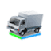

<!DOCTYPE html>
<html>
  <head>
    <title>Rich Marker</title>
    <meta name="viewport" content="width=device-width, initial-scale=1.0, user-scalable=no">
    <meta charset="UTF-8">
    <style type="text/css">
      html, body, #map_canvas {
        margin: 0;
        padding: 0;
        height: 100%;
      }
      .marker_title{
        background: red;
        text-align: center;
        margin-top: 10px;
        font-size: 12px;
        font-family: Arial
      }
      .marker_image{
        margin-top: -10px;
      }
    </style>
    <script type="text/javascript" src="http://maps.googleapis.com/maps/api/js?sensor=false"></script>
    <script type="text/javascript" src="richmarker.js"></script>
    <script type="text/javascript">
      var map;
      var center = new google.maps.LatLng(-37.856206, 145.233980);

      function initialize() {
        var myOptions = {
          zoom: 18,
          center: center, 
          mapTypeId: google.maps.MapTypeId.ROADMAP
        };
        map = new google.maps.Map(document.getElementById('map_canvas'), myOptions);

        marker = new RichMarker({
          position: center,
          map: map,
          draggable: true,
          flat: true,
          anchor: RichMarkerPosition.BOTTOM,
          content: '<div class="marker_title">Service Van</div><div class="marker_image"></div>'
        });

      }

      google.maps.event.addDomListener(window, 'load', initialize);
    </script>
  </head>
  <body>
    <div id="map_canvas"></div>
  </body>
</html>
